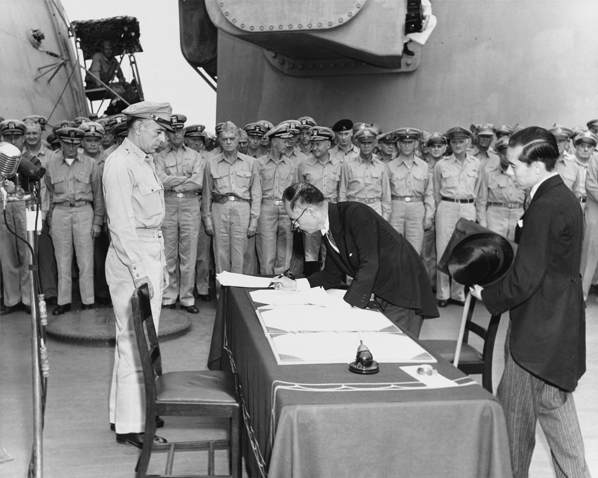

Directions: Study the photograph and the background note, then answer the questions.

Background. The man signing, in top hat and morning dress, is Mamoru Shigemitsu, Japan's foreign minister, signing for the Emperor and the Japanese government. General Yoshijiro Umezu signed next for the Imperial General Headquarters, and General Douglas MacArthur then accepted the surrender for the Allied Powers, with officers of nine nations signing after him. The document being signed accepted the Potsdam Declaration of July 26, proclaimed the unconditional surrender of all Japanese armed forces, and placed the authority of the Emperor under MacArthur as Supreme Commander. The ceremony lasted about twenty minutes. With it, the Second World War was formally over.
1. The photograph shows a signature, not a battle. What does the choice of a formal signed document, on a battleship, with nine nations signing after MacArthur, show about how the Allies wanted the war to end?
2. Name the July document the Instrument of Surrender accepted, and state the two things it did to the Emperor's authority.
3. Put these in order and give each date: the Nagasaki bombing, the Potsdam Declaration, the Hiroshima bombing, the Soviet declaration of war on Japan, the signing in this photograph.
4. A student writes that the bomb alone ended the war on August 6. Using the sequence from this lesson, name two events after August 6 that had to happen before the signature in this photograph, and say what each one did.
1. What does the formal signing show about how the Allies wanted the war to end? The Allies wanted the end written, witnessed, and binding: a signed instrument, accepted on behalf of all the Allied Powers and signed in turn by nine nations, so that the surrender was a legal act no Japanese government could later call a misunderstanding or a pause. The setting carried the same point: the defeated government's minister signed in formal dress on the deck of an American battleship in Tokyo Bay, under the guns of the fleet, with some 250 Allied warships in the bay. The war that began with an attack announced after it had started ended with terms read, signed, and recorded in front of the world. (Blueprint 15)
2. Name the July document, and the two things done to the Emperor's authority. The Potsdam Declaration of July 26, 1945. The instrument kept the Emperor in place, since Shigemitsu signed by his command and in his behalf, and it placed the authority of the Emperor and the Japanese Government under the Supreme Commander for the Allied Powers, who could take such steps as he deemed proper to carry out the terms. Preserved and subordinated at once; both halves are required for full credit. (Blueprint 15)
3. Put the five events in order, with dates. The Potsdam Declaration, July 26, 1945. The Hiroshima bombing, August 6. The Soviet declaration of war on Japan, August 8. The Nagasaki bombing, August 9, the same day Soviet forces invaded Manchuria. The signing aboard the Missouri, September 2. (Blueprint 15)
4. Name two events after August 6 that had to happen before the signing, and what each did. Any two, with their work stated. The Soviet declaration of war and invasion of Manchuria, August 8 and 9, destroyed Japan's hope of Soviet mediation and opened a new front against its armies in Asia. The Nagasaki bombing, August 9, showed Hiroshima was not a single weapon. The emperor's intervention on the night of August 9 to 10 broke the Japanese government's even split between acceptance and fighting on. Japan's communication of acceptance on August 14 turned the decision into terms the Allies could act on. The student's August 6 claim fails because the Japanese government was still divided after Hiroshima and the war's legal end required the whole sequence. (Blueprint 15)
Teacher note. This check is formative. Question 4 is the one to read closely: a student who can name the events but not what each one did has the chronology without the causation, and the writing task will expose the same gap. Question 2 separates students who read the instrument from students who memorized the word surrender; the emperor was neither removed nor left sovereign, and the document says both things in plain words.